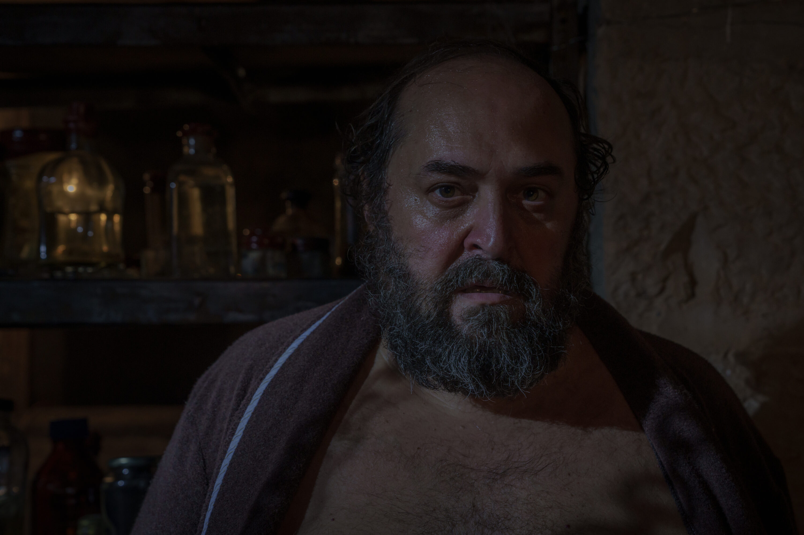
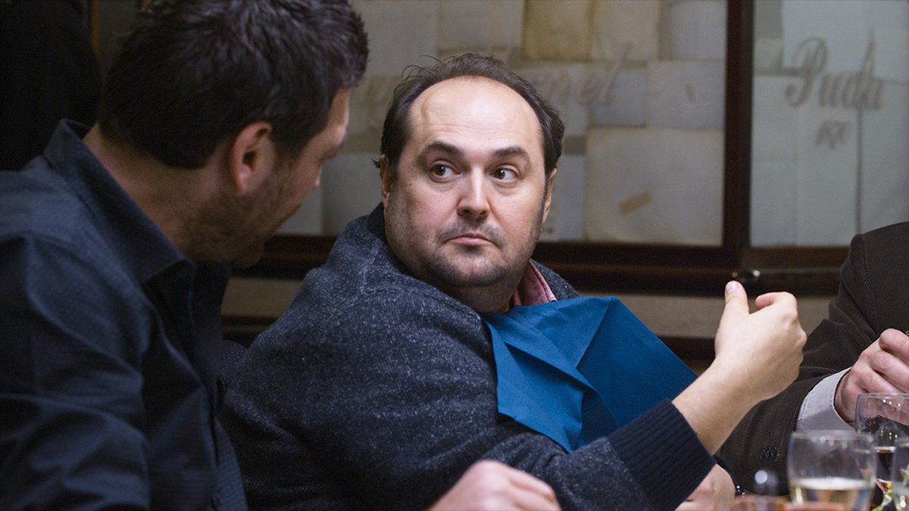
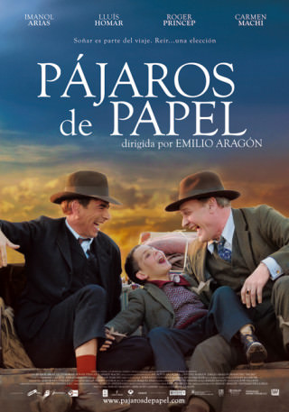
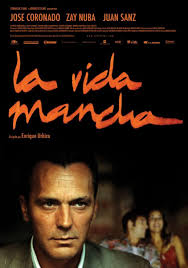
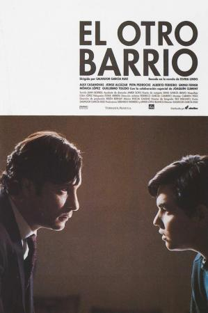
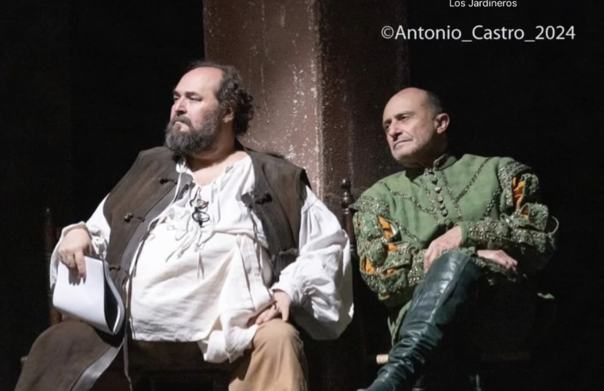
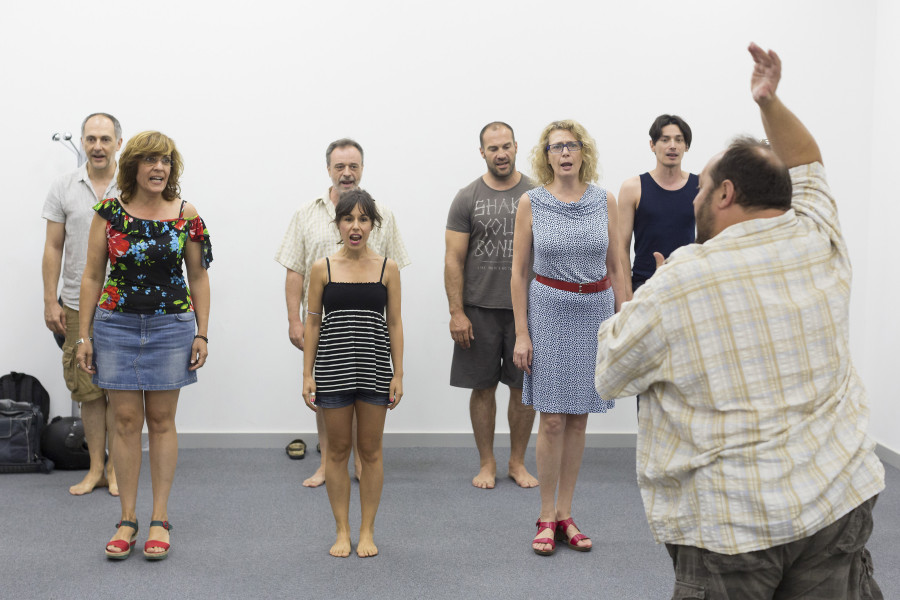
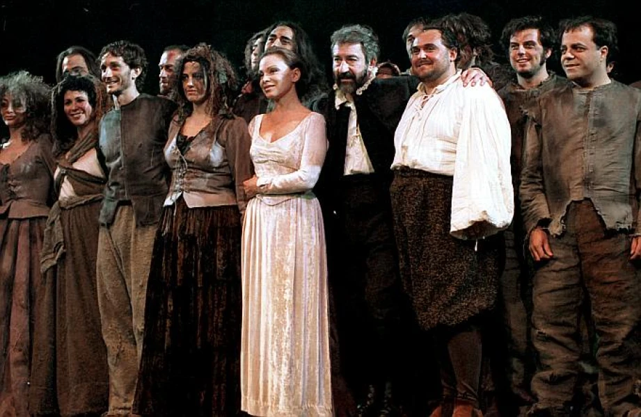
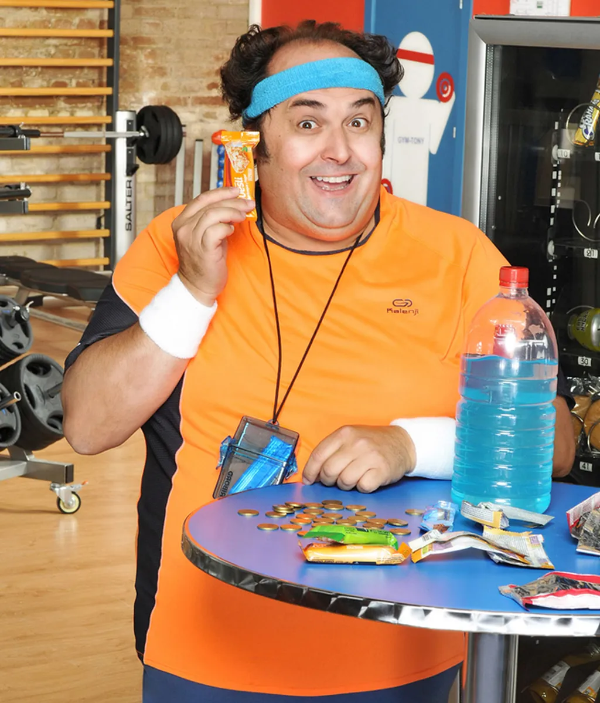

2025
La huella del mal
Carlos Béjar
Dir. Manuel Ríos San Martín

Actor · Tenor Cómico · Director de Escena
Cuatro décadas de oficio entre la escena y la pantalla
Nacido en Albacete en 1968, Juanma Cifuentes se formó en la RESAD y completó su educación en el Piccolo Teatro di Milano bajo la dirección de Giorgio Strehler, referencia incontestable del teatro europeo del siglo XX. Su paso por la Escuela Superior de Canto de Madrid añadió a su paleta una voz de tenor cómico que ha definido buena parte de su trayectoria lírica.
En teatro ha cultivado el verso clásico con rigor y pasión, colaborando con la Compañía Nacional de Teatro Clásico y trabajando junto a maestros como Jerzy Grotowski, Peter Brook, Adolfo Marsillach, Eugenio Barba, Luca Ronconi y Verónica Forqué. Su interpretación de Sancho Panza en el texto de Fernando Fernán Gómez le valió el Premio al Mejor Actor en el Festival Internacional Teatro Avante de Miami en 2004.
La televisión española le conoce por personajes que han quedado en la memoria colectiva: Aquí no hay quien viva, Gym Tony, La que se avecina. Su trabajo más reciente apunta en otra dirección: Nos vemos en otra vida (Disney+, 2024), La huella del mal —candidata al Goya 2026 y seleccionada para el Festival de Málaga 2025—, y Machos Alfa T3 en Netflix.
En Albacete dirige la Escuela El 18, donde transmite el oficio actoral con la honestidad de quien lleva cuatro décadas aprendiéndolo sobre los escenarios.

Carlos Béjar
Dir. Manuel Ríos San Martín

Juan
Dir. Raúl Fernández de Pablo

Dir. Emilio Aragón

Dir. Enrique Urbizu

Dir. Salvador García Ruiz
Agustín / Rafa · Papel recurrente
Rafa · 23 episodios
Papel recurrente
Miguelón · Papel recurrente
Rogelio · Papel recurrente
Miquel Bastaixo · Papel recurrente
Telmo · Papel recurrente
Friman · 5 de 6 episodios
Tenete · 5 episodios (todos)
Papel recurrente
Papel recurrente
Papel recurrente
Sancho Panza · SMEDIA PROD. · 2002 · Texto de Fernando Fernán Gómez
Premio Mejor Actor — Festival Internacional Teatro Avante, Miami (2004)

El jardín de los cerezos
Teatro Fernán Gómez

Don Juan Tenorio
Teatro Fernán Gómez

Defensa de Sancho Panza
SMEDIA PROD.
Formado en la Escuela Superior de Canto de Madrid. Repertorio de más de 40 títulos de zarzuela, ópera y musical.
Albacete
"Una escuela donde el oficio se transmite con honestidad."
Juanma Cifuentes fundó El 18 como espacio de formación actoral en su ciudad natal. Imparte cursos de interpretación, teatro cantado, verso clásico y Commedia dell'Arte.




"Juanma Cifuentes entrega una interpretación de una solidez técnica infrecuente en el cine español contemporáneo."
Sobre La huella del mal
"El actor da vida a Friman con una precisión que se convierte en uno de los pilares del thriller."
Sobre Ana Tramel. El juego
"Juanma Cifuentes es la demostración de que el teatro de verdad y la televisión de calidad no solo conviven, sino que se alimentan mutuamente."
Entrevista
"Un tenor cómico de formación sólida que ha sabido llevar su voz lírica de los escenarios de ópera a los platós de televisión sin perder un gramo de oficio."
Perfil de artista
"La formación en teatro cantado que imparte Cifuentes combina la técnica lírica con la presencia escénica de un intérprete completo."
Curso de teatro cantado
"Nos vemos en otra vida convierte el 11-M en un drama humano honesto, con un reparto donde Cifuentes aporta profundidad sin una sola nota falsa."
Sobre Nos vemos en otra vida